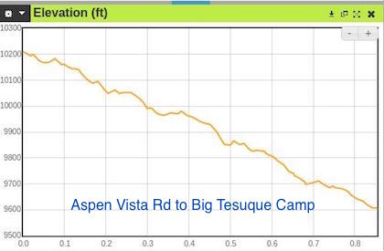
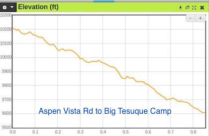

Hike New Mexico
w/ Tom & Ken
Upper Tesuque Hike
| Difficulty | Round-trip | Type | Elev. Chg. | Exposure | Wow Factor | Facilities | Seasons | Flickr | Get There |
|---|---|---|---|---|---|---|---|---|---|
| Medium | 5 miles | Out-and-back | 1800 ft | Sun w/ shade | Mtn views | Picnic Area | Not Winter | Album | Directions |


 

- May 12, 2016: Tesuque Creek not far from campground
- May 12, 2016: Early Spring, Aspens not yet in bloom
- May 12, 2016: A flat part of the trail makes for a casual stroll
- Oct 12, 2015: Once on top, view of Sandia
- Oct 12, 2015: The trail ends at the Santa Fe Ski Area
- https://www.flickr.com/photos/139088815@N08/27165810253/in/photostream/
- https://www.flickr.com/photos/139088815@N08/27676338222/in/photostream/
- https://www.flickr.com/photos/139088815@N08/27165851993/in/photostream/
- https://www.flickr.com/photos/139088815@N08/27498877000/in/photostream/
- https://www.flickr.com/photos/139088815@N08/27165822993/in/photostream/
The upper portion of Tesuque Creek (the North Fork) ascends up to the Santa Fe Ski Basin from the Big Tesuque Campground pullout on Hyde Park Road. Since the trail from the campground area intersects the Aspen Vista Trail, one can also intercept the upper Tesuque by hiking along that trail to the Tesuque Creek juncture (see map). In any case, the hike is very pleasant as it winds up the ski basin hill. Most of the websites pertaining to Tesuque Creek do not include this section of the trail.